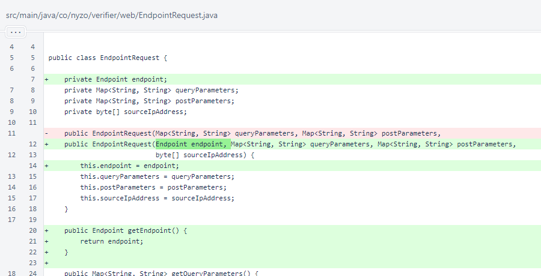
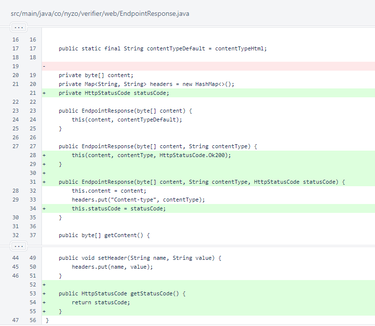
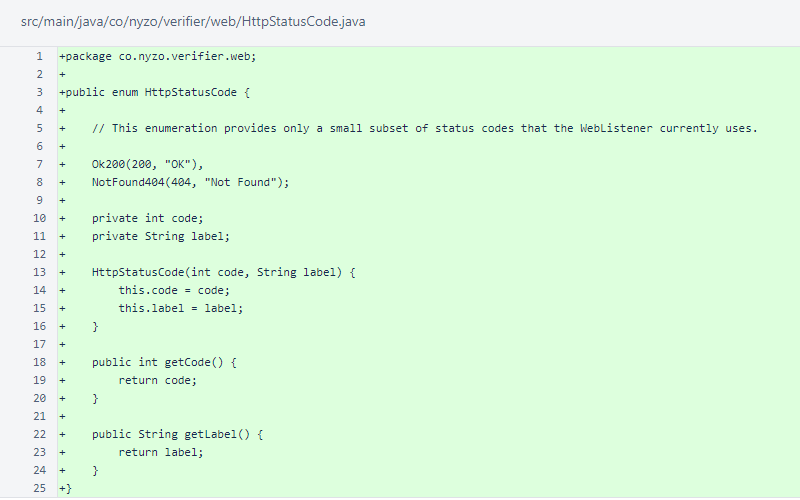
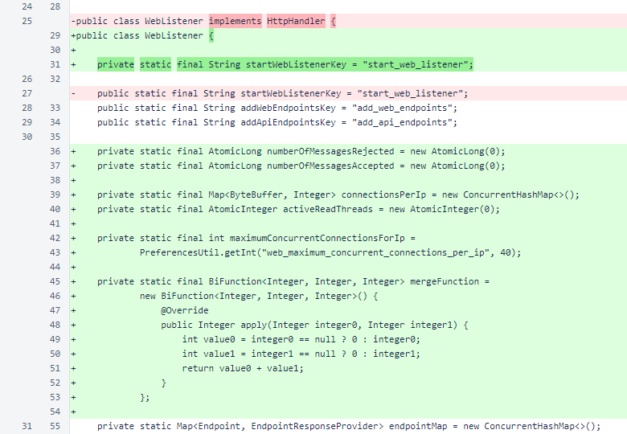
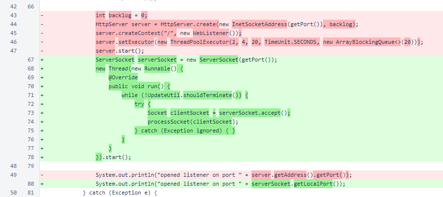
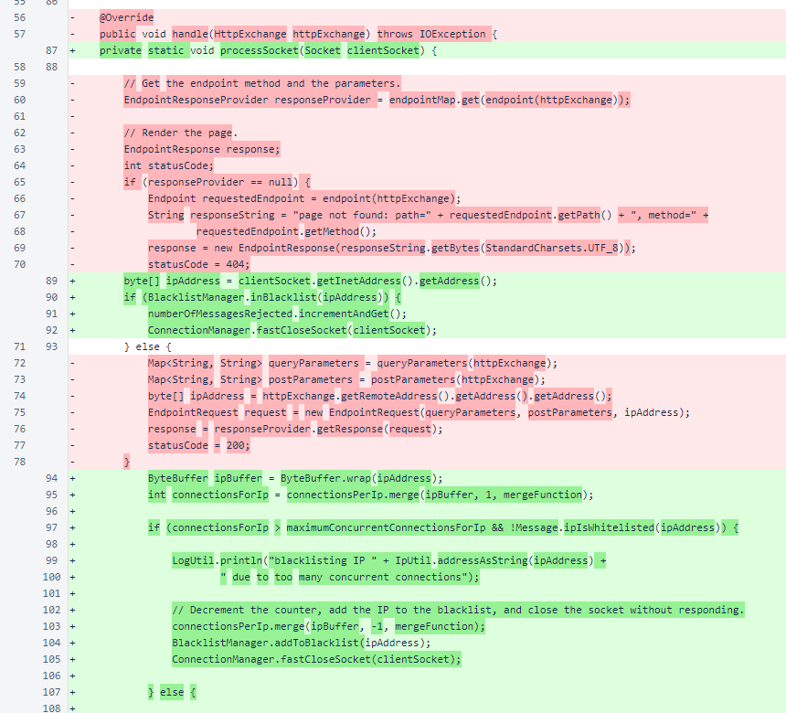
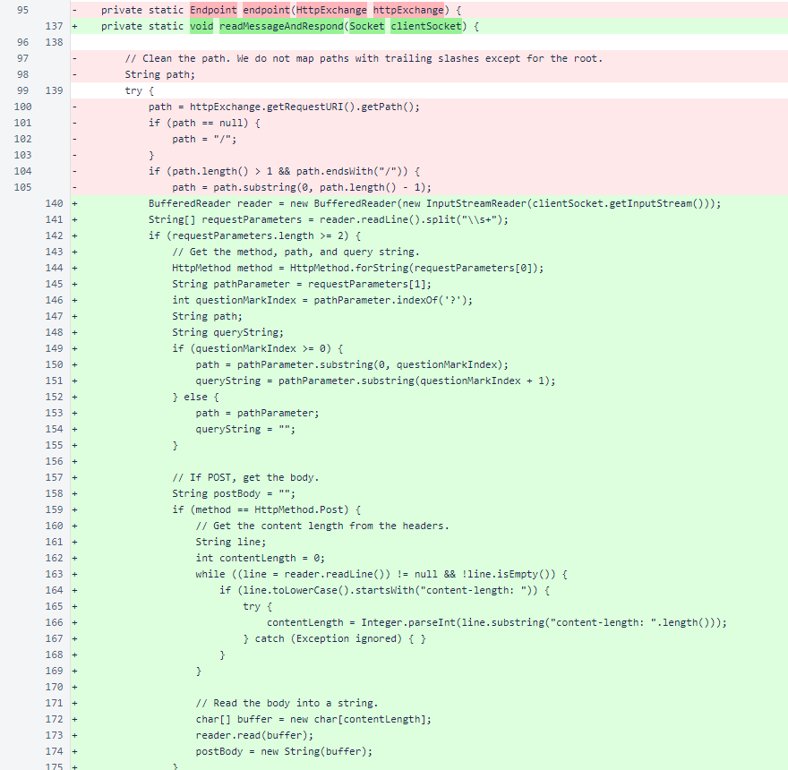
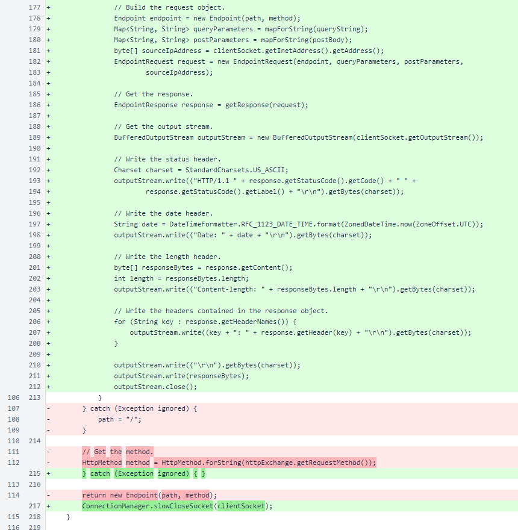
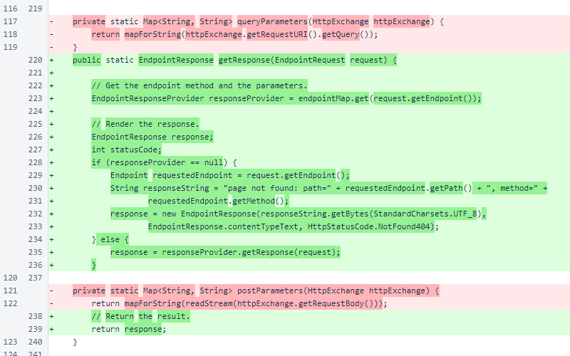
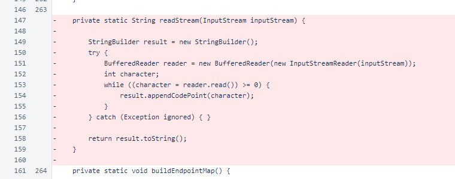

Nyzo version 569 (commit on GitHub) replaces the HTTP server used in the WebListener.
This version affects all run modes when the WebListener is in use. Any Nyzo instance that has not activated the WebListener is unaffected.
In version 527, the WebListener was introduced. In version 529, sentinel monitoring with the WebListener was added. This class is also used to provide basic web functionality for all other run modes of Nyzo. However, the com.sun.net.httpserver.HttpServer class used for the WebListener was not reliable. It is a simple HTTP server that was especially vulnerable to resource exhaustion, and the Nyzo team's publicly accessible instances using the WebListener (quark.nyzo.co, micropay.nyzo.co, tech.nyzo.co, client.nyzo.co) required constant monitoring and frequent restarts. The stability and availability of client.nyzo.co will be especially important as API endpoints (like coins-in-circulation and transaction search) are added and utilized.
While there are reliable, robust web servers that would be suitable for this project, the minimal requirements of the Nyzo WebListener, paired with a desire to keep the codebase as compact and free of dependencies as possible, led to the decision to implement a simple HTTP server on top of a Java Socket. The result is a bare-bones, minimally functional implementation that is already an overall improvement over the previously-used HttpServer class. The simplicity of the new implementation will allow for continued improvement in future versions.
A field for the Endpoint was added to EndpointRequest.
A field for the HttpStatusCode was added to EndpointResponse.
The HttpStatusCode enumeration encapsulates an int status code with a String label. Only 200 and 404 are currently used.
The WebListener class no longer implements the HttpHandler interface. This interface was required by the HttpServer class that is no longer used.
The startWebListenerKey was changed from public to private. Changes in version 565 localized usage of this key to the WebListener class.
Several fields relating to blacklisting and limiting of concurrent connections per IP address were added. The connection-limiting methods used in MeshListener were used as a template for handling of connections in this class. The default of maximumConcurrentConnectionsForIp, a value of 40, is double the default value of the equivalent field in MeshListener. This reflects the higher concurrency required by web browsers.
Creation of an HttpServer object was replaced with creation of a ServerSocket object. The HttpServer handles the fundamentals of the HTTP protocol, while the ServerSocket provides Socket objects when connections are accepted. The ServerSocket and Socket classes are also used for Nyzo messages in the MeshListener.
The handle() method that implemented HttpHandler for the HttpServer was replaced with the processSocket() method. Clients that have exceed the maximum allowable concurrent connections are refused.
The ConnectionManager is used to force-close sockets to avoid an excess of connections in the TIME_WAIT state. The ConnectionManager is explained in more detail in the release notes for version 539.
The request is read and processed on a separate thread. The structure of this method follows the pattern used by MeshListener for responding to incoming messages.
A read timeout of 300ms is set for the socket. This may need to be adjusted if the WebListener is ever required to read large requests.

The readMessageAndRespond() method provides the HTTP implementation. The HTTP method, requested path, and query string are retrieved from the first line of the request. For POST requests, the Content-Length header is found and the POST body is read.
An EndpointRequest object is built to represent the request, and the response is produced by the getResponse() method.
The response is written to the Socket's output stream following the basic requirements of HTTP. The socket is then force-closed by the ConnectionManager.slowCloseSocket() method.
The getResponse() method finds the EndpointResponseProvider in the endpointMap and uses it to produce the EndpointResponse. If an appropriate EndpointResponseProvider is not found, a 404 result is produced.
The readStream() method was used to read a POST body from an HttpExchange object. It is no longer needed.
